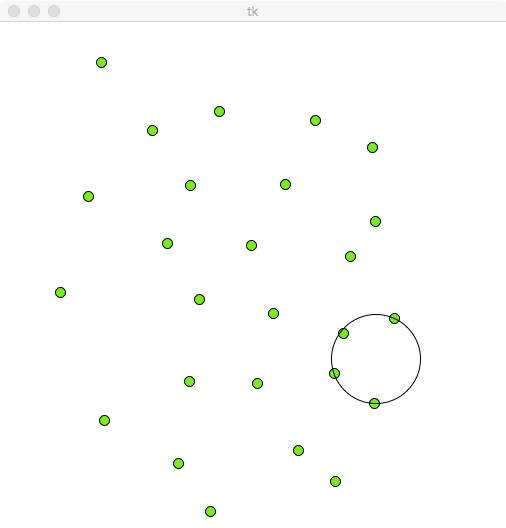
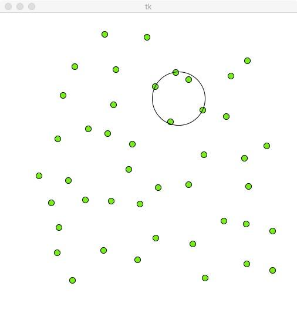
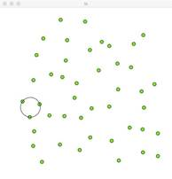
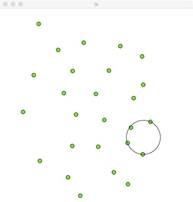
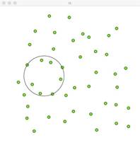

PROBLEM STATEMENT :
You are given N points. Find minimal radius R of the circle, which contains at least K points inside or on the circumference.
Explaination:
Will call circle interesting if it contains at least one point from the N points, and if we move this circle in any direction this circle will contain another set of points.
That circles which are constructed from 3 points(if they don't lie on the same line), or from 2 points(if segment which connects them is diameter of the circle).
We need to go over all interesting circles and check the number of points which lies inside of them.
If there are at least K points that lie inside a circle of the radius R, then at least K points lies inside any circle with a radius bigger than R.
If K points don't lie inside the circle of R, then K doesn't lie inside any circle with a radius smaller than R.
The function of a radius is monotonic, we can use binary search for solving this problem.
So our aim is , we have radius R, find a maximal number of points which lies inside of a circle with radius R and compare it with K .
Use this observation for solving problem in O(N 4)
Will iterate over a pair of points i and j, if the distance between them more than EPS, will try to carry out through them the circles(this points will lie on the circumference), there are exactly 2 circles which can be drawn between 2 distinct points. There are at most 2*(N^2) circles, and after building circles, we iterate over all points and check if they lie inside of the circles in O(1), hence O(N3) complexity for checking with radius R.
Better Solution:
For reducing the complexity we use scanline approach and binary search by radius.
The first step is binary search by radius, secondly iterate over point i with coordinates (X ,Y ) which will lie on the circumference of the circle.
The center of the circle lies somewhere with coordinates (X +R*cos(theta), Y + R*sin(theta)).
For every point j!=i find all possible angles theta which satisfied condition that point j lies inside of circle of radius R and centered in point (X +R*cos(theta)X, Y +R*sin(theta)).
Lets say we have point i and j such that i!=j , how to find all theta's described above?
At first, if sqrt((X i−X j)^ 2 + (Y i−Y j)^ 2) (Euclidian distance between point i and j) more than 2*R, then there are no theta's satisfied condition.
In another case, let's say that we have two circles of radius R centered in points i and j.
Find points where they intersect and every point of their intersection, there can be placed a circle of the radius R, that will contain both points i and j.
All theta's which satisfied the above condition lie within some sector of the circle centered in point i and with the radius R.
Let's find intersection between two circles centered in points i and j with radiuses R. Call these points as A and B (in case if circles intersect in one point, assume that B = A).
Let Pa will be polar angle for vector (A.x−Xi , A.y −Y i ), and Pb for vector (B.x−Xi , B.y −Yi), possible two cases:
If theta lies inside the range I then point j, will be inside the circle.
Now we can reduce this problem to another well-known problem, there are segments, we need to find the point which covered with the maximal number of segments. It can be solved with standard sweep line technique.
Images:
Smallest Circle containing atleast 4 points among 20

Smallest Circle containing atleast 5 points among 44

Same imput of 44 points and different Circles containting 3 , 4 ,8 points respectively
